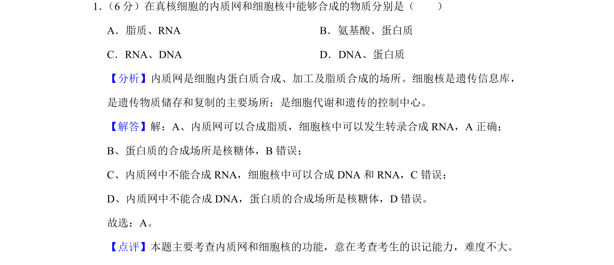
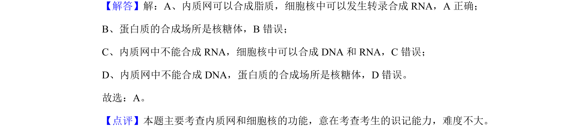

考点：细胞结构 细胞器功能 物质合成场所

本题通过辨析内质网与细胞核的合成产物，考查细胞器的功能分工。

📄 原 PDF 第 1 页：
素材/真题/吉林/2008-2024·（吉林）生物高考真题/2019年高考生物试卷（新课标Ⅱ）（解析卷）.pdf
1． （6分）在真核细胞的内质网和细胞核中能够合成的物质分别是（ ） A．脂质、RNA B．氨基酸、蛋白质 C．RNA、DNA D．DNA、蛋白质
【分析】内质网是细胞内蛋白质合成、加工及脂质合成的场所。细胞核是遗传信息库， 是遗传物质储存和复制的主要场所；是细胞代谢和遗传的控制中心。 【解答】解：A、内质网可以合成脂质，细胞核中可以发生转录合成RNA，A正确； B、蛋白质的合成场所是核糖体，B错误； C、内质网中不能合成RNA，细胞核中可以合成DNA和RNA，C错误； D、内质网中不能合成DNA，蛋白质的合成场所是核糖体，D错误。 故选：A。 【点评】本题主要考查内质网和细胞核的功能，意在考查考生的识记能力，难度不大。